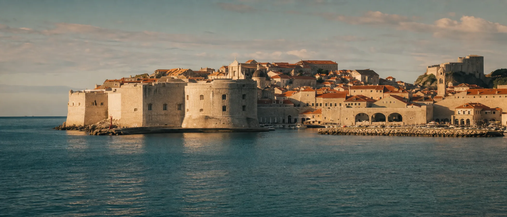
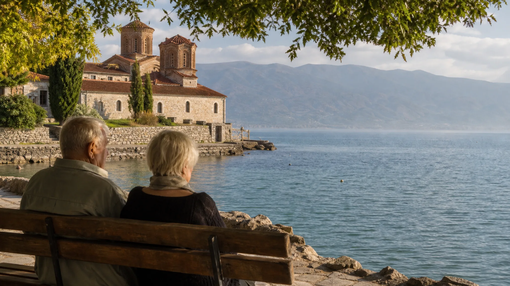

Über die Grenze
Kroatien, Bosnien und Herzegowina sowie Albanien sind von Budva gut erreichbar; Nordmazedonien eignet sich für eine kurze Mehrtagesreise. Wir organisieren den Transport von Tür zu Tür, kurze Gehstrecken und medizinische Begleitung und unterstützen die Gruppe bei den Grenzformalitäten.

Tagesausflüge
Kroatien · 2 Std. · Ganztag
Wir sehen die Stadtmauern von unten, gehen über den Stradun und fahren mit der Seilbahn auf den Srđ. Für den Panoramablick ist kein Treppenaufstieg nötig.
Bosnien-Herzegowina · 90 Min. · Ganztag
Plätze im Schatten alter Platanen, das Kloster Tvrdoš mit Weinverkostung und ein kleiner Wochenmarkt ergeben ein entspanntes Tagesprogramm.
Albanien · 90 Min. · Ganztag
Wir betrachten die Rozafa-Festung von unten, sehen den Skutarisee von der albanischen Seite und machen Pause in einem Café an der Fußgängerzone.
Mehrtagesreisen
Nordmazedonien · 3 Tage · Frühjahr/Herbst
Zum Programm gehören die UNESCO-geschützte Altstadt von Ohrid, das Kloster Sveti Naum und eine Bootsfahrt zu den Quellen. Im Hotel ist rund um die Uhr eine Pflegebegleitung erreichbar.
Bosnien-Herzegowina · 2 Tage · Übergangszeit
Die Alte Brücke, das Derwisch-Haus Blagaj an der Buna-Quelle und eine Übernachtung in einem ruhigen Stadthotel.
Praktische Informationen

Nächster Schritt
Wir kalkulieren Tagesausflüge und Mehrtagesreisen für den konkreten Aufenthalt und Pflegebedarf und nehmen sie in Ihr Saisonprogramm auf.
Angebot anfordern